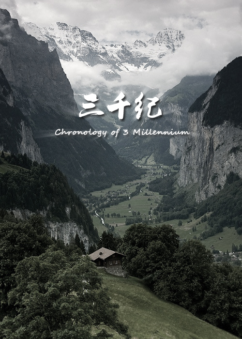

三千纪
徙徒

是什么岁月落入眼帘， 让泪花凝结？ 是什么沧桑融入心田，
让呼吸停歇？
我在你窗前彷徨， 任花儿在手中凋谢…… .
这是个远古的大陆，悲怆与欣喜世代流传，多少事迹被湮没，只有流风依旧如歌。
一位试图挽救自己爱人生命的魔疗师在一次意外中重伤，而大脑被放入了自己制作的神秘而美丽的女性躯壳。一个个的痛苦与磨练使得她一个个的痛苦与磨练使得她拥有了一些奇怪的能力，而她绝世的容貌却藏着远古的秘密。在魔法与剑的大陆，在权力与欲望的夹缝中她备受折磨。
本书试图从一个独特的角度述说魔法的消亡，权力与欲望的丑恶。 美丽让她被人传诵，丑陋让她赢得尊重。因为生而死，却因为死而生。掌握着力量的秘密而无法施展，处在权力中心却渴望心中一方宁静，人生何曾不是矛盾或是炼狱？ 欢迎阅读《三千纪》，这是个不一样的世界。
*********************************************************
[善意提醒]：《三千纪》为第一人称变身小说。书中表达主要内容为人性的无奈，也可以看作女性为主角的小说。 【目前在进行大幅修改，主要针对第一卷。】
我在你窗前彷徨， 任花儿在手中凋谢…… .
这是个远古的大陆，悲怆与欣喜世代流传，多少事迹被湮没，只有流风依旧如歌。
一位试图挽救自己爱人生命的魔疗师在一次意外中重伤，而大脑被放入了自己制作的神秘而美丽的女性躯壳。一个个的痛苦与磨练使得她一个个的痛苦与磨练使得她拥有了一些奇怪的能力，而她绝世的容貌却藏着远古的秘密。在魔法与剑的大陆，在权力与欲望的夹缝中她备受折磨。
本书试图从一个独特的角度述说魔法的消亡，权力与欲望的丑恶。 美丽让她被人传诵，丑陋让她赢得尊重。因为生而死，却因为死而生。掌握着力量的秘密而无法施展，处在权力中心却渴望心中一方宁静，人生何曾不是矛盾或是炼狱？ 欢迎阅读《三千纪》，这是个不一样的世界。
*********************************************************
[善意提醒]：《三千纪》为第一人称变身小说。书中表达主要内容为人性的无奈，也可以看作女性为主角的小说。 【目前在进行大幅修改，主要针对第一卷。】